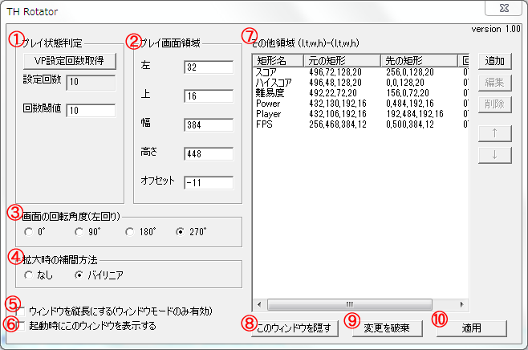
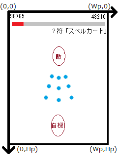

本ツールは上海アリス幻樂団の弾幕系シューティング東方Projectのみ(同じエンジンを使っている呑んべぇ会の黄昏酒場も含む)に向けたものです。ほかのゲーム(萃夢想、緋想天、非想天則を含む)は動作確認を行っておりません。
また、開発ツール(Visual Studio 2010)の関係で、Windows 2000以前のOSは未対応です。
本ツールにはDirect3D 8版と、Direct3D 9版の２つがあり、それぞれ対応作品が異なります。
それぞれの対応作品は以下のとおり(サブタイトル略)になりますが、レイアウト、プレイ時かどうかの判定条件等については各自でカスタマイズ可能なため、
今後の作品にも対応できるかもしれません。
| Direct3D 8版 | Direct3D 9版 |
東方紅魔郷
東方妖々夢
東方永夜抄
東方花映塚(※)
東方文花帖
|
東方風神録
東方地霊殿
東方星蓮船
ダブルスポイラー
妖精大戦争
東方神霊廟
黄昏酒場 |
※ デフォルトでの設定では、ただ画面を回転させるだけになります。
動作確認環境1
OS：Windows 7 SP1 64bit
CPU：Intel Core i7 920
グラフィック：NVIDIA GeForce GTS 250
動作確認環境2(ThinkPad X100e)
OS：Windows 7 SP1 32bit
CPU：AMD Athlon Neo MV-40
グラフィック：ATI Radeon 3200
-
ゲーム起動中にAlt+左右キーで、画面をそれぞれ左回転、右回転することができます。
-
さらに、ゲームプレイ状態と判定されると、プレイ領域を画面に合わせて目一杯に拡大します。
ウィンドウモードでも使えるので、生放送をする人にも便利かもしれません。
-
拡大時のスコアや残機、ボムなどの表示レイアウトは、デフォルトのものが気に入らなければ各自でカスタマイズ可能です。
-
紅魔郷には画面をファイルに保存する機能は標準では搭載されていませんが、妖々夢と同じ方法(Homeキー)で画面を保存することができます。
- 地霊殿以降の作品では、ウィンドウモード(960x720か1280x960)で起動すると、通常ではピクセルの色補間機能がうまく働かずにカクカクになってしまいますが、
本ツールをインストールすることで、バイリニア補間によるなめらかな表示ができます(補間しないオプションもあります)。
-
インストール先の作品が
東方紅魔郷
東方妖々夢
東方永夜抄
東方花映塚
東方文花帖
の場合は、d3d8.dllを、
東方風神録
東方地霊殿
東方星蓮船
ダブルスポイラー
妖精大戦争
東方神霊廟
黄昏酒場
の場合は、d3d9.dllをインストールディレクトリ(exeがあるところ)にコピー＆ペーストしてください。管理者権限が必要なら、管理者権限で行ってください。
-
次に作品名に対応した設定ファイルthrot_<作品名>.iniを、次のディレクトリにコピーし、コピー先でそれをthrot.iniにリネームします。
- 紅魔郷、妖々夢、永夜抄、花映塚、文花帖、風神録、地霊殿、星蓮船、黄昏酒場の場合：
インストールディレクトリ
- ダブルスポイラー、妖精大戦争、東方神霊廟体験版の場合：
- OSがWindows XPの場合：
C:\Documents and Settings\<ログインユーザ名>\Application Data\ShanghaiAlice\th<作品ナンバリング>\
- OSがWindows Vista/7の場合：
C:\Users\<ログインユーザ名>\AppData\Roaming\ShanghaiAlice\th<作品ナンバリング>\
- 次のようなインストールディレクトリと同じ場所にセーブするためのバッチファイルを使って東方を起動している場合：インストールディレクトリ
set APPDATA=
start 実行ファイル名
|
Alt+左右キーを押すことで、それぞれ左方向、右方向に90度ずつ回転します。また、プレイ時またはリプレイ再生時に、回転された画面から見てアスペクト比が4:3より小さくなると、
プレイ領域を画面目一杯に拡大します。
紅魔郷では画面の保存機能は標準では搭載されていませんが、妖々夢と同じくHomeキーを入力することで、画面をビットマップファイルに保存することができるようになります。
なお、保存される画面はTHRotatorにより回転、拡大、レイアウトの変更が行われたものではなく、オリジナルの画面が保存されます。
ウィンドウモードでタイトルバーを右クリックすると、メニューの1番下に"THRotatorを表示"があるので、それをクリックします。すると、次のような画面が表示されます。
Direct3D 9版はこのウィンドウを表示中でもゲームが進行しますが、Direct3D 8版はこの画面が出ている間はゲームが停止します。

- 本ツールでは、現在プレイ中またはリプレイ再生中かどうかを判定するためのパラメータとして、1フレームあたりのVP(=ビューポート)設定回数の閾値を用います。
VP設定回数は、メニュー表示時などの非プレイ時にくらべて、プレイ時やリプレイ再生時のほうが多いです。VP設定回数取得ボタンで、1フレーム間の実際のVP設定回数を取得できるので、
回数閾値の欄に非プレイ時のVP設定回数よりも大きく、プレイ時のVP設定回数以下の値を入力すれば、縦画面化のレイアウトを使ったほうが大きく表示できると判断された場合に限り、
縦画面用のレイアウトになります。
throt.iniが読み込めない場合は、デフォルトで回数閾値は999になります。実際にはそこまでの回数で設定することはありえないので、この値はプレイ中かどうかの判定は必ず偽になることを意味します。
- プレイ画面の矩形の位置、大きさを指定します(下図青枠の部分)。ここで指定した矩形が画面いっぱいにアスペクト比を保存しながら拡大され、画面の中央に配置されます。通常は(左,上,幅,高さ)=(32,16,384,448)、文花帖や妖精大戦争のように真ん中に配置されている場合は(128,16,384,448)です。
しかし、ここで指定した矩形は実際のプレイ領域と同じである必要はなく、妖精大戦争と黄昏酒場のデフォルトレイアウトのように、広めに取ることができます。
オフセットは画面が拡大された後にどれだけy方向に移動させるかを指定します。

- 画面の回転はAlt+左右キーですることができますが、この画面でも回転角を指定することができます。
- 画像の拡大が行われた時の補間方法を指定します。throt.iniが見つからない場合は、デフォルトでバイリニアになります。
- ウィンドウモード時にチェックを入れておくと、ウィンドウの幅と高さを交換して縦長になります。
- 起動時にTHRotatorの画面を出すかどうかを指定します。throt.iniが見つからない場合はデフォルトで表示しません。
なお、このオプションはDirect3D 8版にはありません。
- プレイ領域以外の矩形の転送元矩形、転送先矩形の位置、大きさを指定します。追加、またはリストから矩形を選択して編集すると矩形編集画面が表示されます。矩形の転送は上から順番に行われるため、
リストの一番下にある矩形が最も上に描画されるということになります。ちなみに、転送先の座標系は、プレイ領域のサイズをアスペクト比3:4に合わせた幅と高さをWp,Hpとして、次のようになります。

また、ver. 1.01から拡大して余った黒帯の領域にも矩形の転送ができるようになりました。
- 右上の閉じるボタンと同じくTHRotatorの画面を閉じます。
- 最後に適用を押したときの状態に、フォームへの入力を戻します。
- この画面で入力されたパラメータを実際に反映させます。このボタンを押したタイミングで設定ファイルthrot.iniが保存されます。
以上、わかりにくい説明になってしまったのを反省していますが、パラメータを変えてみたりすれば大体どういうものかわかると思います。
新作への対応の要領ですが、だいたい次のようになります。
- 非プレイ時とプレイ時のVP設定回数を取得して、非プレイ時よりも大きく、プレイ時以下の値を回数閾値に入力する。
- プレイ画面領域の位置とサイズを入力する。
- スコアなどの情報を表示するために、その他領域に矩形を追加する。
下記の作品では、表示桁数等を確保するために、一部のHUD要素のアスペクト比が保存されていません。
- 東方永夜抄 ～ Imperishable Night. (数値の桁をすべて表示するため)
- 東方文花帖 ～ Shoot the Bullet. (数値の桁をすべて表示するため)
- ダブルスポイラー ～ 東方文花帖 (数値の桁をすべて表示するため)
- 妖精大戦争 ～ 東方三月精 (パーフェクトフリーズの文字はすべて表示するため)
ただ単に本ツールの機能を無効化させたいだけなら、d3d9.dll.bakのように、d3d9.dllまたはd3d8.dllを別の名前に変えればできます。
もし完全に削除したいのなら、d3d9.dllまたはd3d8.dllとthrot.iniを削除してください。
-
Alt+左右キーを押しても画面が回転しない
-
ウィンドウモードでタイトルバーを右クリックしても「THRotatorを表示」がない
-
ウィンドウモードの解像度に960×720または1280×960を指定したときに表示がなめらかにならない
-
d3d8.dllまたはd3d9.dllはコピーしましたか。コピーしても動かない場合はDirect3D 8版の作品なのにd3d9.dllをコピーした、なんてことはないでしょうか。
もう一度インストール方法を確認して、画面を回転したい作品が、Direct3D 8版とDirect3D 9版のどちらを必要とするのかを確かめてください。
- 縦画面用のレイアウトになるべきところで縦画面用のレイアウトにならない
- スコアや残機などの情報が表示されない
- 東方文花帖、妖精大戦争、ダブルスポイラーで縦画面用のレイアウトがずれている
-
作品に対応した設定ファイルをコピーしましたか。また、コピー先が間違っていなかったですか。
ダブルスポイラー以降の作品はコピー先を間違えやすいと思いますが、インストール方法をもう一度確認してみてください。
- 本ツールの使用は自己責任でお願いします。
- 本ツールはソフトウェアに仕様外の動作を行わせるツールです。
したがって、本ツールを利用して達成したスコアやリプレイは正式なものとして認められない可能性があります。
もし気になるなら、スコアアタック大会の主催者に確認したり、リプレイをアップロードする際には本ツール使用の旨をコメントを加えたりすると良いと思います。
- 本ツールに含まれているd3d8.dllとd3d9.dllは、絶対にシステムディレクトリにコピーしないでください。
- 本ツールを対応作品以外に使った時の動作は未定義です。
2011/8/14 ver. 1.00 公開
2011/8/16 神霊廟デフォルトレイアウトの修正
2011/8/18 ver. 1.01 アスペクト比固定拡大機能追加